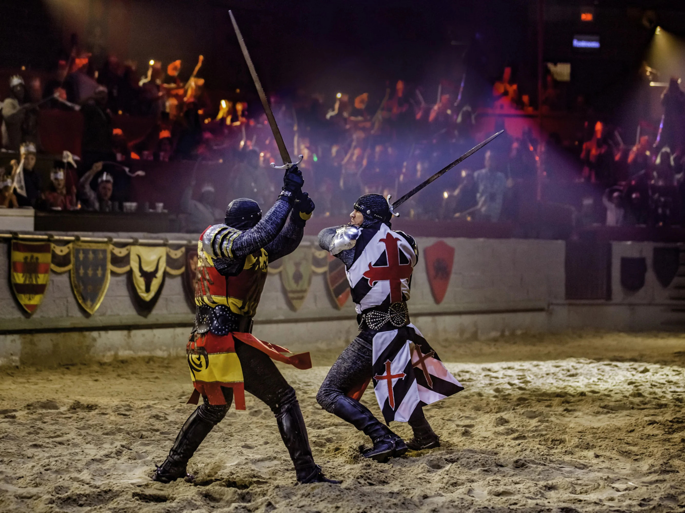

Events
The Festival of the New Dawn
On the anniversary of the first dawn after the Herald ended the Eternal night Herald's Hold has a grand festival. It begins with at dawn with a tournament. The Arbiter's come down to the city center and oversee the 3 main events: Poor Man’s Fireball, the Dragon’s Hoard, and the Great Hunt. Participants compete in these competitions at the promise of glory and gold. Whoever gets the most points in these competitions is awarded a trophy and a monetary prize by the High Arbiter himself.
Poor Man’s Fireball
In this daring competition, the commmon man must produce a fireball like the wizards at the College. A target is set up 15 feet from the contestants. They are given a short time to produce a flame that strikes the target by whatever means necessary. See the creative ingenuity of the teams and feel the heat of the flames they masterfully produce.
The Dragon’s Hoard
A hoard of faux gold sits at the center of the arena. The wizards at the college create an illusory dragon to protect it. Don't be fooled by it's illusory nature; even though the dragon may not be real, it is still quite the sight to see. Teams must attempt to sneak past this illusion to steal the gold of it's hoard. The danger of the dragon may not be real, but the suspense is! Watch contestants use creative new ways to get past the beast and see who gets the gold.
The Great Hunt
The final competition sends teams deep into the Ashenwood. Any quarry they can return with within their allotted time will be scored. Points will be awarded to teams based on the speed they hunt their quarry, the elusiveness of the creature, and the danger presented. The teams may be going into the forest, out of the view of the crowds, but do not fret! The scrying magic of the College allows their mages to project illusory images of the teams onto the town center. You can watch the thrilling hunt from the comfort of your seats at the town center.